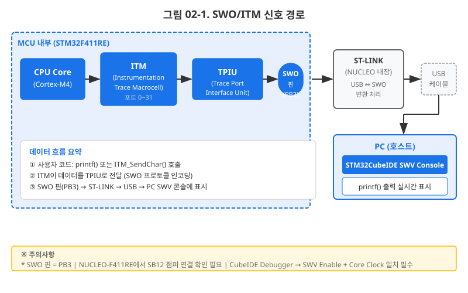
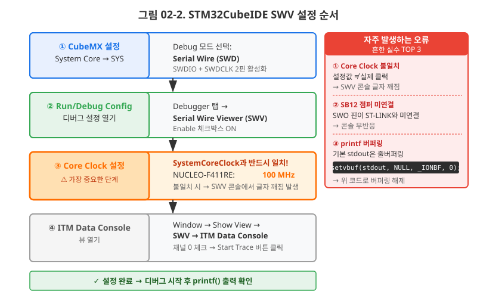
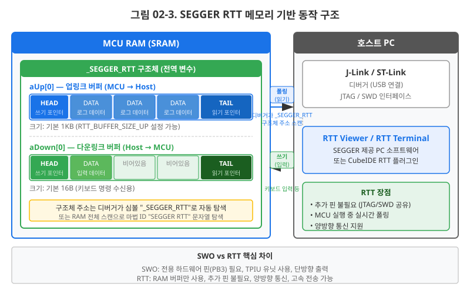
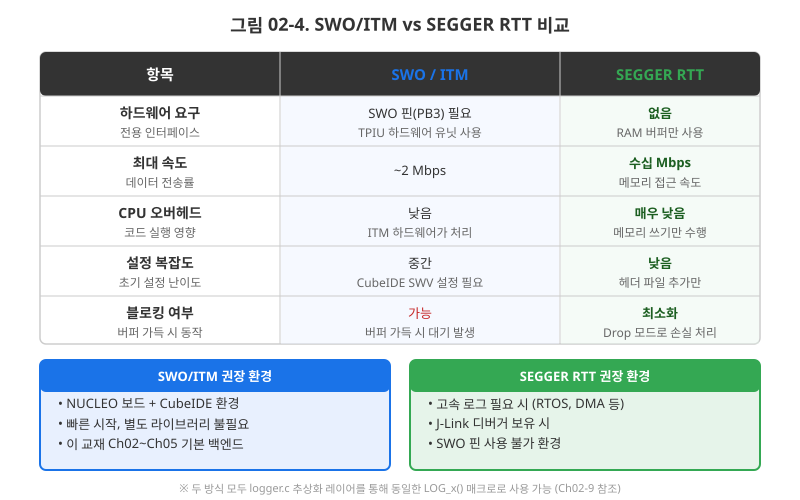
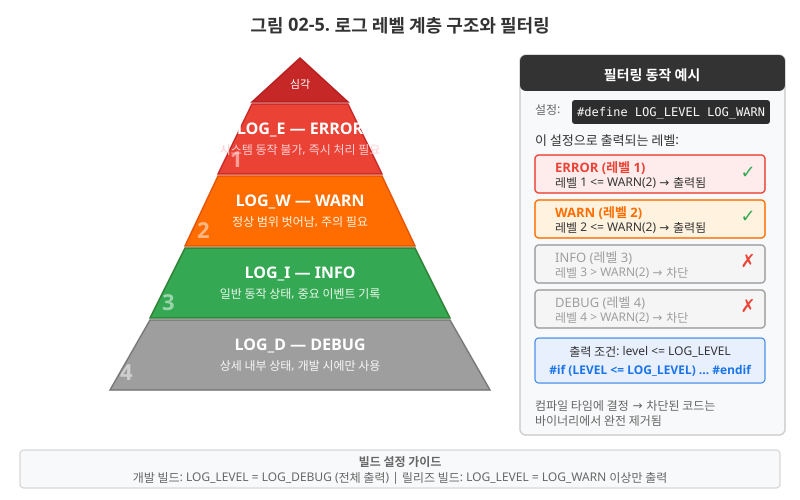
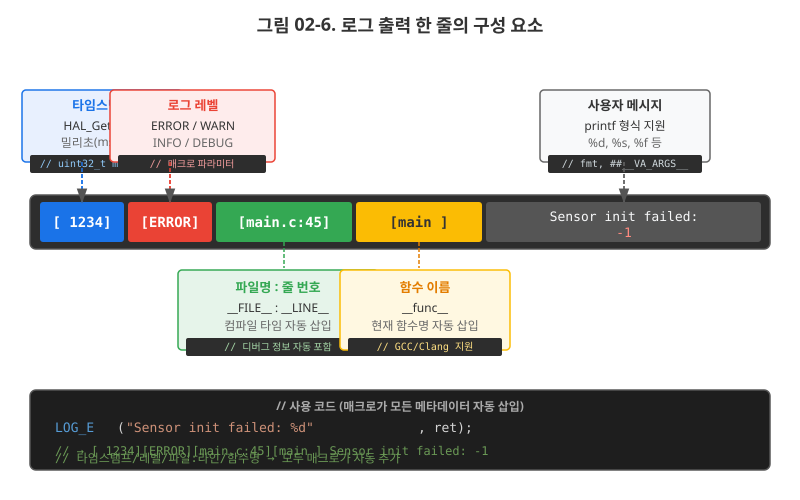
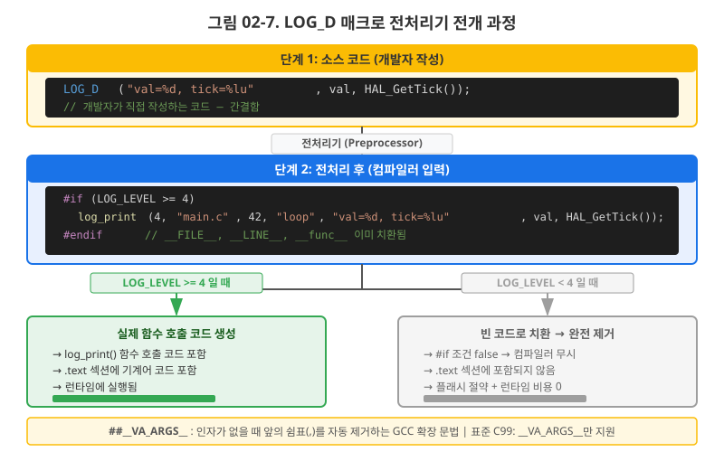
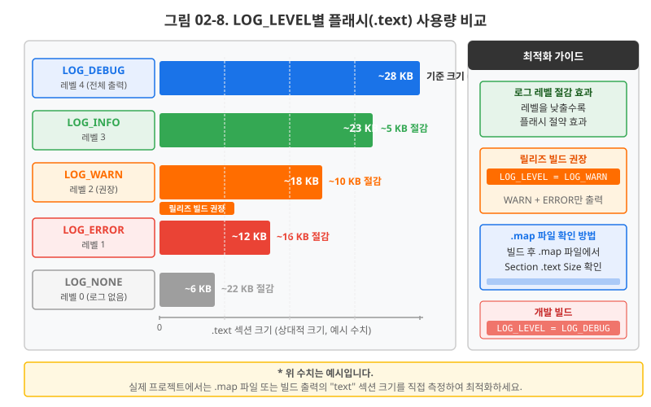
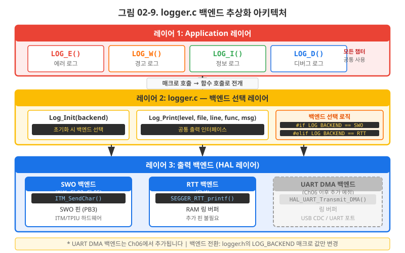

SWO/ITM과 SEGGER RTT로 MCU 내부를 실시간 관찰하고, 4단계 로그 레벨 매크로로 표준 디버그 인프라를 구축한다
이 챕터를 완료하면 다음을 할 수 있습니다.
LOG_E/W/I/D 매크로를 구현할 수 있다.Ch01에서 우리는 버튼 인터럽트와 LED 제어 코드를 완성했습니다. 그런데 잠깐, 코드가 "제대로" 동작하는지 어떻게 확신했나요? LED가 켜지면 성공이라고 했지만, 인터럽트는 정말 한 번만 발생했을까요? 디바운싱 처리는 의도대로 50ms를 잘 걸러냈을까요? MCU 내부에서 무슨 일이 벌어지는지, 지금 우리에게는 "눈"이 없습니다.
실무에서 개발자들은 이 문제를 오래전부터 알고 있었습니다.
그래서 ARM Cortex-M 아키텍처에는 처음부터 디버그 출력 전용 하드웨어 경로가 설계되어 있습니다.
바로 SWO(Serial Wire Output, 직렬 와이어 출력)와 ITM(Instrumentation Trace Macrocell, 계측 트레이스 매크로셀)입니다.
이 절에서는 이 하드웨어 경로를 활용해 printf()를 STM32 콘솔로 리다이렉트하는 방법을 완전히 이해하고 구현합니다.
ARM Cortex-M4 코어 내부에는 ITM이 내장되어 있습니다.
ITM은 32개의 "자극 포트(stimulus port)"를 가지며, 그 중 포트 0번이 printf 텍스트 출력에 사용됩니다.
코드에서 ITM_SendChar()를 호출하면 문자 데이터가 ITM 포트 0으로 들어가고,
이것이 TPIU(Trace Port Interface Unit, 트레이스 포트 인터페이스 유닛)를 통해 직렬화되어
SWO 핀으로 내보내집니다.
NUCLEO-F411RE에서 SWO 핀은 PB3입니다.
이 핀이 보드 내장 ST-LINK 칩에 연결되어 USB를 통해 PC의 CubeIDE SWV(Serial Wire Viewer) 콘솔로 도달합니다.

실생활 예시로는 자동차의 OBD-II(On-Board Diagnostics) 포트를 떠올리면 됩니다. 운전 중에는 ECU가 엔진 상태를 계속 모니터링하지만, 정비소에서 OBD-II 스캐너를 연결해야 비로소 그 데이터를 "볼 수" 있습니다. SWO도 마찬가지입니다. MCU는 항상 ITM으로 데이터를 내보내려 하지만, ST-LINK라는 "스캐너"가 연결되어야 우리 눈에 보입니다.
NUCLEO-F411RE에서 SWO를 사용하려면 먼저 하드웨어 점퍼를 확인해야 합니다. 보드 상단 뒷면의 SB12 솔더 브리지(solder bridge)가 연결되어 있어야 PB3 SWO 신호가 ST-LINK 칩으로 전달됩니다. 새 보드는 기본 연결 상태이지만, 혹시 SWO 출력이 전혀 안 나온다면 이 점퍼를 먼저 확인하세요.
SWO는 특정 보드레이트(baud rate)로 데이터를 전송합니다. 이 보드레이트는 Core Clock 주파수를 기반으로 계산됩니다. 만약 CubeIDE SWV 설정의 Core Clock 값이 실제 MCU 동작 클럭과 다르면, 수신 측에서 비트를 잘못 복원해 출력이 깨지거나 아무것도 나오지 않습니다. NUCLEO-F411RE를 HSE 기반으로 100MHz 설정했다면, SWV 설정에도 반드시 100MHz를 입력해야 합니다.

SWV 설정 순서는 다음과 같습니다.
100 입력 (MHz 단위)
ARM GCC의 printf()는 최종적으로 _write()라는 시스템 콜을 호출합니다.
Newlib C 라이브러리가 제공하는 _write() 기본 구현은 아무것도 하지 않습니다(또는 UART로 연결).
우리가 이 함수를 "오버라이드(재정의)"하면, 모든 printf() 출력이 우리가 원하는 곳으로 흘러갑니다.
바로 ITM 채널 0으로 한 글자씩 내보내는 것입니다.
콜 체인을 정리하면: printf() → vfprintf() → fwrite() → _write() → ITM_SendChar() → SWO 핀
/* syscalls.c (또는 main.c 하단) — _write() 오버라이드 */
#include "stm32f4xx_hal.h"
#include <stdint.h>
/**
* @brief printf → SWO/ITM 리다이렉트
* Newlib의 _write() 시스템 콜을 오버라이드한다.
* ITM 채널 0이 활성화되어 있을 때만 문자를 출력한다.
*
* @param fd 파일 디스크립터 (stdout=1, 여기서는 무시)
* @param ptr 출력할 문자 버퍼 포인터
* @param len 출력할 바이트 수
* @return 실제 출력한 바이트 수
*/
int _write(int fd, char *ptr, int len)
{
(void)fd; /* 파일 디스크립터 미사용 경고 억제 */
/* ITM 디버그 채널 0으로 한 글자씩 출력 */
for (int i = 0; i < len; i++) {
ITM_SendChar((uint32_t)ptr[i]);
}
return len;
}
printf는 기본적으로 버퍼링이 활성화되어 있어 버퍼가 가득 차거나 프로그램이 종료될 때만 출력됩니다.
MCU 펌웨어는 일반적으로 종료되지 않으므로 버퍼가 비워지지 않아 마지막 로그가 유실될 수 있습니다.
setvbuf()로 버퍼링을 비활성화(unbuffered 모드, _IONBF)하면
printf 호출 즉시 _write()가 불려 ITM으로 출력됩니다.
/* main.c — setvbuf로 버퍼링 비활성화 (즉시 출력 보장) */
#include <stdio.h>
int main(void)
{
HAL_Init();
SystemClock_Config(); /* HSE 기반 100MHz 설정 */
/* stdout 버퍼링 비활성화 — printf 호출 즉시 ITM으로 출력 */
setvbuf(stdout, NULL, _IONBF, 0);
printf("=== STM32 SWO 출력 테스트 ===\r\n");
printf("Core Clock: %lu Hz\r\n", SystemCoreClock);
while (1) {
HAL_Delay(1000);
printf("[%6lu] 시스템 실행 중...\r\n", HAL_GetTick());
}
}
SWO/ITM은 강력하지만 제약이 있습니다. SWO 클럭은 Core Clock에서 분주(分周)되어 실제 전송 속도가 제한됩니다. 고속으로 반복되는 이벤트를 로그로 남기면 ITM FIFO가 넘쳐 출력이 손실됩니다. 또한 SWO는 Cortex-M0/M0+ 코어에는 없습니다(ETM 트레이스도 마찬가지). 이러한 한계를 극복하는 방법이 SEGGER RTT(Real-Time Transfer, 실시간 전송)입니다.
RTT는 2014년 SEGGER가 개발한 독창적인 방식입니다. 핵심 아이디어는 단순합니다. "별도 핀이 필요 없다." MCU RAM의 특정 영역에 링 버퍼(ring buffer)를 만들고, 디버거가 JTAG/SWD를 통해 해당 메모리를 직접 읽어가는 방식입니다. MCU 입장에서는 그냥 메모리에 쓰는 것이 전부이므로 CPU 부담이 극히 적습니다.
SEGGER RTT 라이브러리를 프로젝트에 추가하면 _SEGGER_RTT라는 전역 구조체가
MCU RAM에 배치됩니다. 이 구조체는 "업(Up)" 버퍼(MCU → 호스트)와 "다운(Down)" 버퍼(호스트 → MCU)를
각각 링 버퍼 형태로 가집니다. 기본 업 버퍼 0번이 텍스트 로그 출력에 사용됩니다.
디버거(J-Link 또는 ST-LINK)는 SWD 인터페이스를 통해 MCU가 실행 중인 상태에서도 이 메모리 영역을 폴링(polling, 주기적 읽기)합니다. MCU는 로그 데이터를 버퍼에 써두기만 하면 되므로, SWO처럼 ITM FIFO가 빌 때까지 기다릴 필요가 없습니다.

NUCLEO-F411RE의 내장 ST-LINK v2도 RTT를 지원합니다.
SEGGER RTT Viewer를 실행하면 연결 설정 창이 나옵니다.
이때 Connection: USB, J-Link 대신 ST-LINK를 선택하고
Target Device는 STM32F411RE로 설정합니다.
RTT Control Block을 자동 탐색(Search Range) 모드로 설정하면 됩니다.
Core/Src 또는 Middlewares/SEGGER_RTT/ 폴더에 복사합니다:
SEGGER_RTT.cSEGGER_RTT.hSEGGER_RTT_Conf.h#include "SEGGER_RTT.h" 추가 후 빌드 오류 없으면 준비 완료
SEGGER RTT 라이브러리 파일(SEGGER_RTT.c, SEGGER_RTT.h, SEGGER_RTT_Conf.h)을
프로젝트에 추가하고 다음과 같이 사용합니다.
/* rtt_test.c — SEGGER RTT 기초 사용 예제 */
#include "SEGGER_RTT.h"
#include "stm32f4xx_hal.h"
void rtt_example_init(void)
{
/* RTT 초기화 (내부적으로 버퍼 구조체 초기화) */
SEGGER_RTT_Init();
/* 채널 0으로 문자열 출력 */
SEGGER_RTT_WriteString(0, "=== RTT 출력 시작 ===\r\n");
}
void rtt_example_loop(void)
{
static uint32_t count = 0;
/* printf 스타일 포맷 출력 */
SEGGER_RTT_printf(0, "[%6u] 루프 카운트: %lu\r\n",
(unsigned)HAL_GetTick(), count++);
HAL_Delay(500);
}

SWO 또는 RTT로 로그 출력 채널은 열었습니다. 그런데 아무 생각 없이 코드 곳곳에
printf()를 심으면 어떤 일이 벌어질까요?
수백 줄의 로그가 쏟아지고, 정작 중요한 에러 메시지를 놓치게 됩니다.
스마트폰에서 모든 앱 알림을 켜놓으면 정작 중요한 전화가 와도 인지 못하는 것과 같습니다.
실무 개발자들은 이 문제를 로그 레벨(log level)로 해결합니다. 모든 로그 메시지에 "중요도 등급"을 부여하고, 설정에 따라 낮은 등급의 메시지는 출력하지 않는 것입니다.

각 레벨의 실무 사용 기준입니다.
좋은 로그는 보자마자 "언제, 어디서, 무슨 일이 발생했는지"를 알 수 있어야 합니다. 우리가 설계할 포맷은 다음 4개 필드를 포함합니다.

/* 로그 출력 형식 예시 (%.12s: 함수명 최대 12자 절단, 패딩 없음) */
/* [타임스탬프ms][레벨 ][파일명:라인][함수명(최대12자)] 메시지 */
/* ↓ ↓ ↓ ↓ */
[ 1234][ERROR][main.c:45][main] 센서 초기화 실패: 반환값 = -1
[ 1235][WARN ][sensor.c:88][sensor_read] 응답 타임아웃, 재시도 1/3
[ 2000][INFO ][main.c:62][main] 시스템 정상 시작 완료
[ 2001][DEBUG][gpio.c:33][gpio_init] GPIOB 클럭 활성화
타임스탬프는 HAL_GetTick()이 반환하는 밀리초 단위 카운터를 사용합니다.
HAL_GetTick()은 SysTick 인터럽트(1ms 주기)로 증가하는 전역 변수를 읽으므로
추가 하드웨어 설정 없이 바로 사용할 수 있습니다.
단, uint32_t 범위이므로 약 49.7일 후에 오버플로되어 0으로 초기화됩니다.
이제 §2.3에서 설계한 로그 레벨 개념을 실제 코드로 구현할 차례입니다.
목표는 단순합니다. LOG_E("에러 발생: 코드 %d", code);라는 한 줄을 쓰면
타임스탬프, 파일명, 라인 번호, 함수명이 자동으로 붙어서 출력되는 것입니다.
이를 가능하게 하는 도구가 C 전처리기(preprocessor)의 가변 인자 매크로(variadic macro)입니다.
LOG_E("초기화 실패")도 같습니다. 개발자가 메시지만 쓰면,
전처리기가 타임스탬프, 파일명, 라인, 함수명이라는 "고정 정보"를 자동으로 새겨주는 도장입니다.
__FILE__과 __LINE__은 컴파일 타임에 결정됩니다.
C 컴파일러는 컴파일 타임에 자동으로 값이 채워지는 특수 매크로를 제공합니다.
__FILE__: 현재 소스 파일의 경로 문자열. 예: "/home/user/project/src/main.c"__LINE__: 현재 줄 번호를 나타내는 정수. 예: 45__func__: 현재 함수 이름 문자열. 예: "HAL_GPIO_EXTI_Callback" (C99 표준)/* 내장 매크로 동작 확인 예제 */
void test_builtin_macros(void)
{
/* 이 printf는 컴파일 시점에 다음으로 치환됨: */
/* printf("파일: /path/to/main.c, 줄: 10, 함수: test_builtin_macros\r\n"); */
printf("파일: %s, 줄: %d, 함수: %s\r\n",
__FILE__, __LINE__, __func__);
}
printf처럼 인자 개수가 고정되지 않은 매크로를 만들려면
가변 인자 매크로(variadic macro) 문법을 사용합니다.
...는 0개 이상의 추가 인자를 받겠다는 선언이고,
__VA_ARGS__는 그 인자들이 전개되는 위치를 지정합니다.
STM32CubeIDE(GCC 기반)에서는 ##__VA_ARGS__가 완전히 지원됩니다.
GCC에서 사용하는 ##__VA_ARGS__의 ##는 중요한 역할을 합니다.
인자가 0개일 때 앞의 쉼표(,)를 자동으로 제거해주어,
LOG_E("메시지")처럼 추가 인자 없는 호출도 정상 컴파일됩니다.
이 교재의 CubeIDE 환경에서는 신경 쓰지 않아도 됩니다.
(참고: C 표준(C11 이전)에는 없는 GCC 확장이므로 IAR이나 MSVC 같은 다른 컴파일러 환경에서는
__VA_OPT__(,)를 사용합니다.)
/* 가변 인자 매크로 문법 이해 */
/* 기본 형태 — 인자가 1개 이상일 때만 동작 (C99 표준) */
#define DEBUG_C99(fmt, ...) printf(fmt, __VA_ARGS__)
/* GCC 확장 — 인자 0개도 허용 (## 가 쉼표를 제거) */
#define DEBUG_GCC(fmt, ...) printf(fmt, ##__VA_ARGS__)
/* 사용 예 */
/* DEBUG_C99("메시지") → 컴파일 에러 (쉼표 뒤 인자 없음) */
/* DEBUG_GCC("메시지") → 정상 컴파일 */
/* DEBUG_GCC("값=%d", val) → 정상 컴파일 */
한 번에 완성 매크로를 보여주는 것보다, 3단계로 점진적으로 빌드업하면서 각 요소를 이해합니다.
/* 단계 1: 레벨 태그만 붙이기 */
#define LOG_E(fmt, ...) printf("[ERROR] " fmt "\r\n", ##__VA_ARGS__)
#define LOG_W(fmt, ...) printf("[WARN ] " fmt "\r\n", ##__VA_ARGS__)
#define LOG_I(fmt, ...) printf("[INFO ] " fmt "\r\n", ##__VA_ARGS__)
#define LOG_D(fmt, ...) printf("[DEBUG] " fmt "\r\n", ##__VA_ARGS__)
/* 사용 예 */
LOG_E("센서 응답 없음");
/* 출력: [ERROR] 센서 응답 없음 */
LOG_D("버튼 상태: %d", button_state);
/* 출력: [DEBUG] 버튼 상태: 1 */
/* 단계 2: 위치 정보 자동 삽입 */
/* __FILE__ 경로가 너무 길면 파일명만 추출: strrchr 사용 */
/* 실제 구현은 logger.c의 basename() 함수로 처리 */
#define LOG_E(fmt, ...) \
printf("[ERROR][%s:%d][%s] " fmt "\r\n", \
__FILE__, __LINE__, __func__, ##__VA_ARGS__)
/* 사용 예 */
/* LOG_E("초기화 실패: %d", ret); */
/* 출력: [ERROR][main.c:45][main] 초기화 실패: -1 */
/* 단계 3: HAL_GetTick() 타임스탬프 포함 완성 버전 */
#define LOG_E(fmt, ...) \
printf("[%6lu][ERROR][%s:%d][%.12s] " fmt "\r\n", \
HAL_GetTick(), __FILE__, __LINE__, __func__, ##__VA_ARGS__)
/* %.12s: 함수명을 최대 12자로 절단 — 12자 초과 시 잘립니다 */
/* 사용 예 */
/* LOG_E("초기화 실패: %d", ret); */
/* 출력: [ 1234][ERROR][main.c:45][main ] 초기화 실패: -1 */
/* 함수명이 22자인 경우: [ 1234][ERROR][main.c:45][HAL_GPIO_EXT] 로 절단됨 */

단계별 빌드업을 이해했다면, 실제 프로젝트에서 사용할 완성 버전을 살펴봅니다.
완성 버전은 매크로가 직접 printf()를 호출하는 대신,
log_print()라는 내부 함수를 호출하는 구조입니다.
이렇게 하면 나중에 백엔드(출력 채널)를 바꾸기 쉬워집니다.
§2.6과 실습 섹션에서 완성 코드를 확인합니다.
§2.4의 매크로만으로도 편리하지만, 아직 한 가지 중요한 문제가 남아있습니다.
배포용 펌웨어에서 LOG_D() 코드를 일일이 지우거나 주석 처리하는 것은 실수가 생기기 쉽고,
다음 개발 버전에서 다시 추가하는 번거로움이 있습니다.
더 심각한 문제는, 만약 런타임 if문으로 필터링한다면 코드는 여전히 바이너리에 남아
플래시를 낭비한다는 점입니다.
해법은 컴파일 타임 레벨 필터링입니다.
#if 전처리기 지시문으로 로그 코드를 통째로 제거해버리면,
바이너리에 흔적조차 남지 않습니다.
/* 방법 1: 런타임 if문 필터링 — 코드는 바이너리에 남는다 */
#define LOG_D_RUNTIME(fmt, ...) \
do { \
if (g_log_level >= LOG_LEVEL_DEBUG) { \
printf("[DEBUG] " fmt "\r\n", ##__VA_ARGS__); \
} \
} while(0)
/* 문제점:
* - if(0) 블록도 컴파일러가 일단 컴파일함
* - 조건이 항상 false여도 코드가 .text 섹션 차지
* - 최적화 플래그 없이는 비교 연산도 실행됨 */
/* 방법 2: 컴파일 타임 #if 필터링 — 코드가 바이너리에서 완전 제거 */
#if (LOG_LEVEL >= LOG_LEVEL_DEBUG)
#define LOG_D(fmt, ...) \
log_print(LOG_LEVEL_DEBUG, __FILE__, __LINE__, __func__, fmt, ##__VA_ARGS__)
#else
#define LOG_D(fmt, ...) ((void)0) /* 빈 표현식으로 치환 — 컴파일러가 제거 */
#endif
/* 장점:
* - LOG_LEVEL < 4이면 LOG_D() 호출이 ((void)0)으로 치환됨
* - 컴파일러가 최적화 없이도 코드를 생성하지 않음
* - fmt 인자의 문자열 리터럴도 .rodata에서 제거됨 */
매번 logger.h를 수정하지 않고 빌드 설정에서 LOG_LEVEL을 변경할 수 있습니다.
이렇게 하면 Debug 빌드 설정과 Release 빌드 설정을 각각 다른 로그 레벨로 자동 관리할 수 있습니다.
LOG_LEVEL=3 추가 (INFO 레벨)LOG_LEVEL=1 (ERROR만) 또는 LOG_LEVEL=0 (무음)
또는 CubeMX 생성 Makefile 기반 프로젝트라면 다음과 같이 명령줄 인자로 전달합니다.
/* make 명령줄 예시 (Makefile 기반 프로젝트) */
/* make -DLOG_LEVEL=3 all → INFO 레벨 빌드 */
/* make -DLOG_LEVEL=0 release → 로그 없는 배포 빌드 */

"정말 플래시가 줄어드나?"를 직접 확인하는 방법입니다.
CubeIDE에서 빌드하면 Debug/ 폴더에 [프로젝트명].map 파일이 생성됩니다.
/* .map 파일에서 확인할 내용 */
/* 1. 전체 섹션 크기 요약 (파일 맨 아래) */
/* Memory region Used Size Region Size %age Used */
/* FLASH: 12 KB 512 KB 2.34% */
/* RAM: 4 KB 128 KB 3.13% */
/* 2. .text 섹션에 포함된 심볼 목록 */
/* .text.log_print 0x08002abc 0x1a4 build/logger.o */
/* → LOG_LEVEL=0으로 빌드 시 이 항목이 사라짐 */
지금까지 SWO/ITM 경로, RTT 개념, 로그 레벨 설계, 매크로 구현, 컴파일 타임 필터링을 각각 이해했습니다. 이제 이것들을 하나의 logger 모듈로 통합하고, Ch01에서 만든 GPIO/EXTI 코드에 로그를 적용하여 v0.2 프로젝트를 완성합니다.

logger.h가 제공하는 LOG_E/W/I/D 매크로는 애플리케이션 코드가 직접 사용합니다.
매크로는 내부적으로 log_print()를 호출하고,
log_print()는 현재 설정된 백엔드(SWO/ITM)로 출력합니다.
Ch04에서는 UART, Ch06에서는 UART DMA 백엔드로 교체하는 실습을 합니다.
/* logger.h — STM32 표준 로그 시스템 (Ch02 v0.2) */
#ifndef LOGGER_H
#define LOGGER_H
#include "stm32f4xx_hal.h"
#include <stdio.h>
/* ===== 로그 레벨 정의 ===== */
#define LOG_LEVEL_NONE 0
#define LOG_LEVEL_ERROR 1
#define LOG_LEVEL_WARN 2
#define LOG_LEVEL_INFO 3
#define LOG_LEVEL_DEBUG 4
/* 기본 로그 레벨 (CubeIDE Preprocessor Define으로 오버라이드 가능) */
#ifndef LOG_LEVEL
#define LOG_LEVEL LOG_LEVEL_DEBUG /* 개발 빌드 기본값 */
#endif
/* ===== 내부 출력 함수 ===== */
void log_print(int level, const char *file, int line,
const char *func, const char *fmt, ...);
/* ===== 로그 매크로 ===== */
#if (LOG_LEVEL >= LOG_LEVEL_ERROR)
#define LOG_E(fmt, ...) \
log_print(LOG_LEVEL_ERROR, __FILE__, __LINE__, __func__, fmt, ##__VA_ARGS__)
#else
#define LOG_E(fmt, ...) ((void)0)
#endif
#if (LOG_LEVEL >= LOG_LEVEL_WARN)
#define LOG_W(fmt, ...) \
log_print(LOG_LEVEL_WARN, __FILE__, __LINE__, __func__, fmt, ##__VA_ARGS__)
#else
#define LOG_W(fmt, ...) ((void)0)
#endif
#if (LOG_LEVEL >= LOG_LEVEL_INFO)
#define LOG_I(fmt, ...) \
log_print(LOG_LEVEL_INFO, __FILE__, __LINE__, __func__, fmt, ##__VA_ARGS__)
#else
#define LOG_I(fmt, ...) ((void)0)
#endif
#if (LOG_LEVEL >= LOG_LEVEL_DEBUG)
#define LOG_D(fmt, ...) \
log_print(LOG_LEVEL_DEBUG, __FILE__, __LINE__, __func__, fmt, ##__VA_ARGS__)
#else
#define LOG_D(fmt, ...) ((void)0)
#endif
#endif /* LOGGER_H */
/* logger.c — SWO/ITM 백엔드 구현 */
#include "logger.h"
#include <stdarg.h>
#include <string.h>
/* 파일 경로에서 파일명만 추출 */
static const char *basename(const char *path)
{
const char *p = strrchr(path, '/');
if (!p) p = strrchr(path, '\\'); /* Windows 경로 대응 */
return p ? (p + 1) : path;
}
/* 로그 레벨 태그 문자열 */
static const char *level_tag[] = {
"", /* 0: NONE */
"ERROR", /* 1: ERROR */
"WARN ", /* 2: WARN */
"INFO ", /* 3: INFO */
"DEBUG", /* 4: DEBUG */
};
/* 내부 출력 함수 — ITM(SWO) 백엔드 */
void log_print(int level, const char *file, int line,
const char *func, const char *fmt, ...)
{
char buf[256];
int offset = 0;
va_list args;
/* 헤더: [타임스탬프ms][레벨][파일:라인][함수] */
offset += snprintf(buf + offset, sizeof(buf) - offset,
"[%6lu][%s][%s:%d][%.12s] ",
HAL_GetTick(),
level_tag[level],
basename(file),
line,
func);
/* %.12s: 함수명 12자 초과 시 절단 */
/* 오버플로 방지: 사용자 메시지를 위한 최소 공간 확보 */
if (offset >= (int)(sizeof(buf) - 4)) {
offset = sizeof(buf) - 4;
}
/* 사용자 메시지 */
va_start(args, fmt);
offset += vsnprintf(buf + offset, sizeof(buf) - offset, fmt, args);
va_end(args);
/* 개행 추가 */
if (offset < (int)(sizeof(buf) - 2)) {
buf[offset++] = '\r';
buf[offset++] = '\n';
buf[offset] = '\0';
}
/* ITM 채널 0으로 출력 */
for (int i = 0; i < offset; i++) {
ITM_SendChar((uint32_t)buf[i]);
}
}
Ch01에서 완성한 HAL_GPIO_EXTI_Callback()에 LOG를 적용하면 어떻게 달라지는지 비교합니다.
/* ===== Before (Ch01 v0.1) — 로그 없음 ===== */
void HAL_GPIO_EXTI_Callback(uint16_t GPIO_Pin)
{
static uint32_t last_tick = 0;
uint32_t now = HAL_GetTick();
if (GPIO_Pin != BUTTON_Pin) {
return;
}
/* 50ms 디바운싱 */
if ((now - last_tick) < 50) {
return;
}
last_tick = now;
/* LED 토글 */
HAL_GPIO_TogglePin(LED2_GPIO_Port, LED2_Pin);
}
/* ===== After (Ch02 v0.2) — LOG 적용 ===== */
#include "logger.h"
void HAL_GPIO_EXTI_Callback(uint16_t GPIO_Pin)
{
static uint32_t last_tick = 0;
uint32_t now = HAL_GetTick();
if (GPIO_Pin != BUTTON_Pin) {
/* 예상치 못한 핀에서 인터럽트 발생 — 경고 수준 */
LOG_W("알 수 없는 EXTI 핀: 0x%04X", GPIO_Pin);
return;
}
/* 50ms 디바운싱 — 바운스 발생 시 DEBUG 로그 */
if ((now - last_tick) < 50) {
LOG_D("디바운싱 필터링 — 경과 시간: %lu ms", now - last_tick);
return;
}
last_tick = now;
/* 버튼 유효 입력 확인 */
LOG_I("버튼 클릭 감지 @ %lu ms", now);
/* LED 토글 */
HAL_GPIO_TogglePin(LED2_GPIO_Port, LED2_Pin);
LOG_D("LED 상태 전환 완료");
}
After 코드를 보면 코드 흐름의 각 분기점에 로그가 위치합니다.
이제 "버튼을 10번 눌렀는데 LED가 5번만 켜지는" 버그가 생겼을 때,
LOG_D("디바운싱 필터링")이 실제로 몇 번 출력되는지 확인하면 원인을 즉시 찾을 수 있습니다.
목표: logger.h/logger.c 모듈을 프로젝트에 통합하고, Ch01 GPIO/EXTI 코드에 4단계 로그를 적용하여 SWV 콘솔에서 실시간 로그를 확인한다.
환경: STM32CubeIDE 1.14 이상, NUCLEO-F411RE, USB 케이블 (ST-LINK 연결)
소요 시간: 약 30분
Ch01 프로젝트의 Core/Inc/ 폴더에 logger.h를 생성합니다.
Core/Inc/ 우클릭 → New → Header Filelogger.hlogger.h 완성 코드를 전체 복사하여 붙여넣기이어서 SWV 활성화를 위해 _write()를 추가합니다.
/* Core/Src/syscalls.c 하단에 추가 (또는 main.c 상단) */
#include "stm32f4xx_hal.h"
/* printf → SWO/ITM 리다이렉트 */
int _write(int fd, char *ptr, int len)
{
(void)fd;
for (int i = 0; i < len; i++) {
ITM_SendChar((uint32_t)ptr[i]);
}
return len;
}
Core/Src/ 폴더에 logger.c를 생성합니다.
Core/Src/ 우클릭 → New → Source Filelogger.clogger.c 완성 코드를 전체 복사하여 붙여넣기빌드가 성공하면 CubeIDE Debug Configurations에서 SWV를 활성화합니다. (§2.1 설정 참조)
main.c를 열어 다음과 같이 수정합니다.
/* main.c — logger 통합 */
#include "main.h"
#include "logger.h" /* ← 추가 */
#include <stdio.h>
int main(void)
{
HAL_Init();
SystemClock_Config();
MX_GPIO_Init();
/* stdout 버퍼링 비활성화 */
setvbuf(stdout, NULL, _IONBF, 0);
/* 시스템 시작 로그 */
LOG_I("=== STM32 v0.2 시작 ===");
LOG_I("Core Clock: %lu Hz", SystemCoreClock);
LOG_D("GPIO 초기화 완료");
while (1) {
/* 메인 루프 — 인터럽트 기반이므로 대기 */
HAL_Delay(5000);
LOG_D("메인 루프 하트비트 @ %lu ms", HAL_GetTick());
}
}
/* stm32f4xx_it.c 또는 gpio.c — EXTI 콜백 수정 */
#include "logger.h"
void HAL_GPIO_EXTI_Callback(uint16_t GPIO_Pin)
{
static uint32_t last_tick = 0;
uint32_t now = HAL_GetTick();
if (GPIO_Pin != BUTTON_Pin) {
LOG_W("알 수 없는 EXTI 핀: 0x%04X", GPIO_Pin);
return;
}
if ((now - last_tick) < 50) {
LOG_D("디바운싱 필터링 — 경과 시간: %lu ms", now - last_tick);
return;
}
last_tick = now;
LOG_I("버튼 클릭 감지 @ %lu ms", now);
HAL_GPIO_TogglePin(LED2_GPIO_Port, LED2_Pin);
LOG_D("LED 토글 완료");
}
디버그 실행 순서:
예상 로그 출력:
[ 0][INFO ][main.c:22][main] === STM32 v0.2 시작 ===
[ 1][INFO ][main.c:23][main] Core Clock: 100000000 Hz
[ 2][DEBUG][main.c:24][main] GPIO 초기화 완료
[ 1523][INFO ][main.c:38][HAL_GPIO_EXT] 버튼 클릭 감지 @ 1523 ms
[ 1523][DEBUG][main.c:41][HAL_GPIO_EXT] LED 토글 완료
[ 1547][DEBUG][main.c:32][HAL_GPIO_EXT] 디바운싱 필터링 — 경과 시간: 24 ms
[ 1823][INFO ][main.c:38][HAL_GPIO_EXT] 버튼 클릭 감지 @ 1823 ms
※ %.12s 포맷은 최소 너비 패딩 없이 최대 12자로 절단합니다. main(4자)은 그대로, HAL_GPIO_EXTI_Callback(22자)는 HAL_GPIO_EXT로 절단됩니다.
_write()를 오버라이드해 printf()를 SWO 핀으로 리다이렉트한다. NUCLEO-F411RE에서는 PB3(SB12 점퍼)이 SWO 핀이며, SWV 설정에서 Core Clock을 실제 클럭(100MHz)과 일치시켜야 한다.LOG_LEVEL 설정값보다 높은 레벨의 메시지는 출력되지 않는다.LOG_E/W/I/D 매크로: ##__VA_ARGS__ GCC 확장과 __FILE__/__LINE__/__func__ 내장 매크로를 조합해 한 줄 호출로 타임스탬프·위치·메시지가 자동 포맷된 로그를 출력한다.#if (LOG_LEVEL >= X) 구조로 조건을 만족하지 않는 로그 코드는 바이너리에 전혀 포함되지 않는다. CubeIDE Preprocessor Defines에서 LOG_LEVEL을 빌드 설정별로 관리한다.logger.h(매크로 정의) + logger.c(백엔드 구현)로 구성. 현재는 SWO/ITM 백엔드이며, Ch04(UART)와 Ch06(UART DMA 링 버퍼)에서 백엔드를 확장한다.이 챕터 완료 후 전체 프로젝트에 logger 모듈이 추가되었습니다. 이후 모든 챕터의 코드는 #include "logger.h"를 사용합니다.
ITM_SendChar() API를 사용한다.LOG_LEVEL을 LOG_LEVEL_WARN(2)으로 설정하고 빌드한 경우 실제로 출력되는 라인을 모두 고르세요. 그리고 컴파일 타임 필터링에서 출력되지 않는 로그가 런타임 if문 필터링과 다르게 처리되는 이유를 서술하세요.
LOG_E("하드웨어 초기화 실패"); /* (A) */
LOG_W("버퍼 사용률 90%% 초과"); /* (B) */
LOG_I("시스템 시작 완료"); /* (C) */
LOG_D("루프 카운터: %d", cnt); /* (D) */LOG_I 매크로를 직접 작성하세요.
[타임스탬프][INFO ][파일명:라인번호][함수명] 메시지LOG_LEVEL이 LOG_LEVEL_INFO 이상일 때만 컴파일에 포함HAL_GetTick() 사용log_print() 내부 함수를 호출하는 방식으로 구현LOG_D 매크로 구현 코드에서 문제점을 2개 이상 찾고, 각각에 대해 개선 방안을 제시하세요.
/* 팀원의 구현 — 문제가 있습니다 */
#define LOG_D(msg, ...) \
if (log_level == 4) { \
printf("[DEBUG][" __FILE__ ":" __LINE__ "] " msg, __VA_ARGS__); \
}__LINE__ 타입, 가변 인자 처리, do-while 패턴)
LOG_LEVEL 값, 플래시 절약 전략, 현장에서 문제 발생 시 대응 방법.